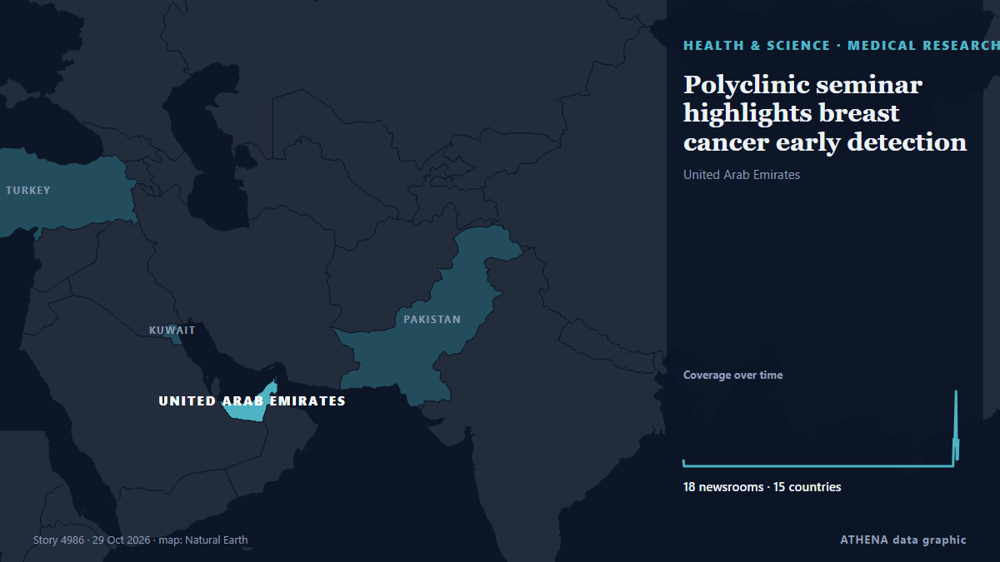

Polyclinic seminar highlights breast cancer early detection 
Карта: United Arab Emirates. 18 СМИ в 15 странах Early detection is key in fighting breast cancer; hence why it’s so important to go for regular screenings or mammograms. из The Local Spain
Коротко Независимые источники: 18 изданий в 15 странах, с 25 окт.; первым сообщил The Local Spain; освещение идёт на спад. ATHENA оценивает риск как низкий (1.3/10), прежде всего из-за тяжести описываемого ущерба и географического и отраслевого охвата. Уверенность — 90 % (высокая); подтверждают независимые источники: 18 изданий, средняя надёжность источников — 72 %. Кто сообщал: 7 СМИ в стране Гана · Ghana, 5 СМИ в стране ОАЭ · United Arab Emirates, 3 СМИ в стране Пакистан · Pakistan. Освещение шло с 25 окт. по 29 окт., 17614 ч.
Почему это важно: События в здравоохранении и науке могут менять риски для общественного здоровья, приоритеты исследований и регулирование.
Что изменилось: 4 новых сообщений от 4 редакций за 24 часа до 29 окт..
ATHENA News Room · автоматический анализ 29 публикаций из 15 стран Впервые замечено 25 Oct 2024, 08:19 UTC Обновлено 29 Oct 2026, 06:36 UTC
Первый заголовок: I had both breasts removed – cancer survivor
☆ Следить · Здоровье и наука ☆ Следить · ОАЭ · United Arab Emirates Как это работает Заголовки приводятся на английском языке, как они были опубликованы.
Коротко в цифрах 5.0 Значимость
1.3 Риск · низкий
90% Уверенность
Как мы оцениваем ›
Отобрано, оценено и написано по опубликованной методологии ATHENA. Ни один редактор не вмешивается в отдельные события. Как это создаётся ›
пик 11 25 Oct 08:19 UTC 27 Oct 08:19 UTC 25 Oct 08:19 UTC · 1 публикации 27 Oct 08:19 UTC · 0 публикаций 29 Oct 08:19 UTC · 0 публикаций 31 Oct 08:19 UTC · 0 публикаций 02 Nov 08:19 UTC · 0 публикаций 04 Nov 08:19 UTC · 0 публикаций 06 Nov 08:19 UTC · 0 публикаций 08 Nov 08:19 UTC · 0 публикаций 10 Nov 08:19 UTC · 0 публикаций 12 Nov 08:19 UTC · 0 публикаций 14 Nov 08:19 UTC · 0 публикаций 16 Nov 08:19 UTC · 0 публикаций 18 Nov 08:19 UTC · 0 публикаций 20 Nov 08:19 UTC · 0 публикаций 22 Nov 08:19 UTC · 0 публикаций 24 Nov 08:19 UTC · 0 публикаций 26 Nov 08:19 UTC · 0 публикаций 28 Nov 08:19 UTC · 0 публикаций 30 Nov 08:19 UTC · 0 публикаций 02 Dec 08:19 UTC · 0 публикаций 04 Dec 08:19 UTC · 0 публикаций 06 Dec 08:19 UTC · 0 публикаций 08 Dec 08:19 UTC · 0 публикаций 10 Dec 08:19 UTC · 0 публикаций 12 Dec 08:19 UTC · 0 публикаций 14 Dec 08:19 UTC · 0 публикаций 16 Dec 08:19 UTC · 0 публикаций 18 Dec 08:19 UTC · 0 публикаций 20 Dec 08:19 UTC · 0 публикаций 22 Dec 08:19 UTC · 0 публикаций 24 Dec 08:19 UTC · 0 публикаций 26 Dec 08:19 UTC · 0 публикаций 28 Dec 08:19 UTC · 0 публикаций 30 Dec 08:19 UTC · 0 публикаций 01 Jan 08:19 UTC · 0 публикаций 03 Jan 08:19 UTC · 0 публикаций 05 Jan 08:19 UTC · 0 публикаций 07 Jan 08:19 UTC · 0 публикаций 09 Jan 08:19 UTC · 0 публикаций 11 Jan 08:19 UTC · 0 публикаций 13 Jan 08:19 UTC · 0 публикаций 15 Jan 08:19 UTC · 0 публикаций 17 Jan 08:19 UTC · 0 публикаций 19 Jan 08:19 UTC · 0 публикаций 21 Jan 08:19 UTC · 0 публикаций 23 Jan 08:19 UTC · 0 публикаций 25 Jan 08:19 UTC · 0 публикаций 27 Jan 08:19 UTC · 0 публикаций 29 Jan 08:19 UTC · 0 публикаций 31 Jan 08:19 UTC · 0 публикаций 02 Feb 08:19 UTC · 0 публикаций 04 Feb 08:19 UTC · 0 публикаций 06 Feb 08:19 UTC · 0 публикаций 08 Feb 08:19 UTC · 0 публикаций 10 Feb 08:19 UTC · 0 публикаций 12 Feb 08:19 UTC · 0 публикаций 14 Feb 08:19 UTC · 0 публикаций 16 Feb 08:19 UTC · 0 публикаций 18 Feb 08:19 UTC · 0 публикаций 20 Feb 08:19 UTC · 0 публикаций 22 Feb 08:19 UTC · 0 публикаций 24 Feb 08:19 UTC · 0 публикаций 26 Feb 08:19 UTC · 0 публикаций 28 Feb 08:19 UTC · 0 публикаций 02 Mar 08:19 UTC · 0 публикаций 04 Mar 08:19 UTC · 0 публикаций 06 Mar 08:19 UTC · 0 публикаций 08 Mar 08:19 UTC · 0 публикаций 10 Mar 08:19 UTC · 0 публикаций 12 Mar 08:19 UTC · 0 публикаций 14 Mar 08:19 UTC · 0 публикаций 16 Mar 08:19 UTC · 0 публикаций 18 Mar 08:19 UTC · 0 публикаций 20 Mar 08:19 UTC · 0 публикаций 22 Mar 08:19 UTC · 0 публикаций 24 Mar 08:19 UTC · 0 публикаций 26 Mar 08:19 UTC · 0 публикаций 28 Mar 08:19 UTC · 0 публикаций 30 Mar 08:19 UTC · 0 публикаций 01 Apr 08:19 UTC · 0 публикаций 03 Apr 08:19 UTC · 0 публикаций 05 Apr 08:19 UTC · 0 публикаций 07 Apr 08:19 UTC · 0 публикаций 09 Apr 08:19 UTC · 0 публикаций 11 Apr 08:19 UTC · 0 публикаций 13 Apr 08:19 UTC · 0 публикаций 15 Apr 08:19 UTC · 0 публикаций 17 Apr 08:19 UTC · 0 публикаций 19 Apr 08:19 UTC · 0 публикаций 21 Apr 08:19 UTC · 0 публикаций 23 Apr 08:19 UTC · 0 публикаций 25 Apr 08:19 UTC · 0 публикаций 27 Apr 08:19 UTC · 0 публикаций 29 Apr 08:19 UTC · 0 публикаций 01 May 08:19 UTC · 0 публикаций 03 May 08:19 UTC · 0 публикаций 05 May 08:19 UTC · 0 публикаций 07 May 08:19 UTC · 0 публикаций 09 May 08:19 UTC · 0 публикаций 11 May 08:19 UTC · 0 публикаций 13 May 08:19 UTC · 0 публикаций 15 May 08:19 UTC · 0 публикаций 17 May 08:19 UTC · 0 публикаций 19 May 08:19 UTC · 0 публикаций 21 May 08:19 UTC · 0 публикаций 23 May 08:19 UTC · 0 публикаций 25 May 08:19 UTC · 0 публикаций 27 May 08:19 UTC · 0 публикаций 29 May 08:19 UTC · 0 публикаций 31 May 08:19 UTC · 0 публикаций 02 Jun 08:19 UTC · 0 публикаций 04 Jun 08:19 UTC · 0 публикаций 06 Jun 08:19 UTC · 0 публикаций 08 Jun 08:19 UTC · 0 публикаций 10 Jun 08:19 UTC · 0 публикаций 12 Jun 08:19 UTC · 0 публикаций 14 Jun 08:19 UTC · 0 публикаций 16 Jun 08:19 UTC · 0 публикаций 18 Jun 08:19 UTC · 0 публикаций 20 Jun 08:19 UTC · 0 публикаций 22 Jun 08:19 UTC · 0 публикаций 24 Jun 08:19 UTC · 0 публикаций 26 Jun 08:19 UTC · 0 публикаций 28 Jun 08:19 UTC · 0 публикаций 30 Jun 08:19 UTC · 0 публикаций 02 Jul 08:19 UTC · 0 публикаций 04 Jul 08:19 UTC · 0 публикаций 06 Jul 08:19 UTC · 0 публикаций 08 Jul 08:19 UTC · 0 публикаций 10 Jul 08:19 UTC · 0 публикаций 12 Jul 08:19 UTC · 0 публикаций 14 Jul 08:19 UTC · 0 публикаций 16 Jul 08:19 UTC · 0 публикаций 18 Jul 08:19 UTC · 0 публикаций 20 Jul 08:19 UTC · 0 публикаций 22 Jul 08:19 UTC · 0 публикаций 24 Jul 08:19 UTC · 0 публикаций 26 Jul 08:19 UTC · 0 публикаций 28 Jul 08:19 UTC · 0 публикаций 30 Jul 08:19 UTC · 0 публикаций 01 Aug 08:19 UTC · 0 публикаций 03 Aug 08:19 UTC · 0 публикаций 05 Aug 08:19 UTC · 0 публикаций 07 Aug 08:19 UTC · 0 публикаций 09 Aug 08:19 UTC · 0 публикаций 11 Aug 08:19 UTC · 0 публикаций 13 Aug 08:19 UTC · 0 публикаций 15 Aug 08:19 UTC · 0 публикаций 17 Aug 08:19 UTC · 0 публикаций 19 Aug 08:19 UTC · 0 публикаций 21 Aug 08:19 UTC · 0 публикаций 23 Aug 08:19 UTC · 0 публикаций 25 Aug 08:19 UTC · 0 публикаций 27 Aug 08:19 UTC · 0 публикаций 29 Aug 08:19 UTC · 0 публикаций 31 Aug 08:19 UTC · 0 публикаций 02 Sep 08:19 UTC · 0 публикаций 04 Sep 08:19 UTC · 0 публикаций 06 Sep 08:19 UTC · 0 публикаций 08 Sep 08:19 UTC · 0 публикаций 10 Sep 08:19 UTC · 0 публикаций 12 Sep 08:19 UTC · 0 публикаций 14 Sep 08:19 UTC · 0 публикаций 16 Sep 08:19 UTC · 0 публикаций 18 Sep 08:19 UTC · 0 публикаций 20 Sep 08:19 UTC · 0 публикаций 22 Sep 08:19 UTC · 0 публикаций 24 Sep 08:19 UTC · 0 публикаций 26 Sep 08:19 UTC · 0 публикаций 28 Sep 08:19 UTC · 0 публикаций 30 Sep 08:19 UTC · 0 публикаций 02 Oct 08:19 UTC · 0 публикаций 04 Oct 08:19 UTC · 0 публикаций 06 Oct 08:19 UTC · 0 публикаций 08 Oct 08:19 UTC · 0 публикаций 10 Oct 08:19 UTC · 0 публикаций 12 Oct 08:19 UTC · 0 публикаций 14 Oct 08:19 UTC · 0 публикаций 16 Oct 08:19 UTC · 0 публикаций 18 Oct 08:19 UTC · 0 публикаций 20 Oct 08:19 UTC · 0 публикаций 22 Oct 08:19 UTC · 0 публикаций 24 Oct 08:19 UTC · 0 публикаций 26 Oct 08:19 UTC · 0 публикаций 28 Oct 08:19 UTC · 0 публикаций 30 Oct 08:19 UTC · 0 публикаций 01 Nov 08:19 UTC · 0 публикаций 03 Nov 08:19 UTC · 0 публикаций 05 Nov 08:19 UTC · 0 публикаций 07 Nov 08:19 UTC · 0 публикаций 09 Nov 08:19 UTC · 0 публикаций 11 Nov 08:19 UTC · 0 публикаций 13 Nov 08:19 UTC · 0 публикаций 15 Nov 08:19 UTC · 0 публикаций 17 Nov 08:19 UTC · 0 публикаций 19 Nov 08:19 UTC · 0 публикаций 21 Nov 08:19 UTC · 0 публикаций 23 Nov 08:19 UTC · 0 публикаций 25 Nov 08:19 UTC · 0 публикаций 27 Nov 08:19 UTC · 0 публикаций 29 Nov 08:19 UTC · 0 публикаций 01 Dec 08:19 UTC · 0 публикаций 03 Dec 08:19 UTC · 0 публикаций 05 Dec 08:19 UTC · 0 публикаций 07 Dec 08:19 UTC · 0 публикаций 09 Dec 08:19 UTC · 0 публикаций 11 Dec 08:19 UTC · 0 публикаций 13 Dec 08:19 UTC · 0 публикаций 15 Dec 08:19 UTC · 0 публикаций 17 Dec 08:19 UTC · 0 публикаций 19 Dec 08:19 UTC · 0 публикаций 21 Dec 08:19 UTC · 0 публикаций 23 Dec 08:19 UTC · 0 публикаций 25 Dec 08:19 UTC · 0 публикаций 27 Dec 08:19 UTC · 0 публикаций 29 Dec 08:19 UTC · 0 публикаций 31 Dec 08:19 UTC · 0 публикаций 02 Jan 08:19 UTC · 0 публикаций 04 Jan 08:19 UTC · 0 публикаций 06 Jan 08:19 UTC · 0 публикаций 08 Jan 08:19 UTC · 0 публикаций 10 Jan 08:19 UTC · 0 публикаций 12 Jan 08:19 UTC · 0 публикаций 14 Jan 08:19 UTC · 0 публикаций 16 Jan 08:19 UTC · 0 публикаций 18 Jan 08:19 UTC · 0 публикаций 20 Jan 08:19 UTC · 0 публикаций 22 Jan 08:19 UTC · 0 публикаций 24 Jan 08:19 UTC · 0 публикаций 26 Jan 08:19 UTC · 0 публикаций 28 Jan 08:19 UTC · 0 публикаций 30 Jan 08:19 UTC · 0 публикаций 01 Feb 08:19 UTC · 0 публикаций 03 Feb 08:19 UTC · 0 публикаций 05 Feb 08:19 UTC · 0 публикаций 07 Feb 08:19 UTC · 0 публикаций 09 Feb 08:19 UTC · 0 публикаций 11 Feb 08:19 UTC · 0 публикаций 13 Feb 08:19 UTC · 0 публикаций 15 Feb 08:19 UTC · 0 публикаций 17 Feb 08:19 UTC · 0 публикаций 19 Feb 08:19 UTC · 0 публикаций 21 Feb 08:19 UTC · 0 публикаций 23 Feb 08:19 UTC · 0 публикаций 25 Feb 08:19 UTC · 0 публикаций 27 Feb 08:19 UTC · 0 публикаций 01 Mar 08:19 UTC · 0 публикаций 03 Mar 08:19 UTC · 0 публикаций 05 Mar 08:19 UTC · 0 публикаций 07 Mar 08:19 UTC · 0 публикаций 09 Mar 08:19 UTC · 0 публикаций 11 Mar 08:19 UTC · 0 публикаций 13 Mar 08:19 UTC · 0 публикаций 15 Mar 08:19 UTC · 0 публикаций 17 Mar 08:19 UTC · 0 публикаций 19 Mar 08:19 UTC · 0 публикаций 21 Mar 08:19 UTC · 0 публикаций 23 Mar 08:19 UTC · 0 публикаций 25 Mar 08:19 UTC · 0 публикаций 27 Mar 08:19 UTC · 0 публикаций 29 Mar 08:19 UTC · 0 публикаций 31 Mar 08:19 UTC · 0 публикаций 02 Apr 08:19 UTC · 0 публикаций 04 Apr 08:19 UTC · 0 публикаций 06 Apr 08:19 UTC · 0 публикаций 08 Apr 08:19 UTC · 0 публикаций 10 Apr 08:19 UTC · 0 публикаций 12 Apr 08:19 UTC · 0 публикаций 14 Apr 08:19 UTC · 0 публикаций 16 Apr 08:19 UTC · 0 публикаций 18 Apr 08:19 UTC · 0 публикаций 20 Apr 08:19 UTC · 0 публикаций 22 Apr 08:19 UTC · 0 публикаций 24 Apr 08:19 UTC · 0 публикаций 26 Apr 08:19 UTC · 0 публикаций 28 Apr 08:19 UTC · 0 публикаций 30 Apr 08:19 UTC · 0 публикаций 02 May 08:19 UTC · 0 публикаций 04 May 08:19 UTC · 0 публикаций 06 May 08:19 UTC · 0 публикаций 08 May 08:19 UTC · 0 публикаций 10 May 08:19 UTC · 0 публикаций 12 May 08:19 UTC · 0 публикаций 14 May 08:19 UTC · 0 публикаций 16 May 08:19 UTC · 0 публикаций 18 May 08:19 UTC · 0 публикаций 20 May 08:19 UTC · 0 публикаций 22 May 08:19 UTC · 0 публикаций 24 May 08:19 UTC · 0 публикаций 26 May 08:19 UTC · 0 публикаций 28 May 08:19 UTC · 0 публикаций 30 May 08:19 UTC · 0 публикаций 01 Jun 08:19 UTC · 0 публикаций 03 Jun 08:19 UTC · 0 публикаций 05 Jun 08:19 UTC · 0 публикаций 07 Jun 08:19 UTC · 0 публикаций 09 Jun 08:19 UTC · 0 публикаций 11 Jun 08:19 UTC · 0 публикаций 13 Jun 08:19 UTC · 0 публикаций 15 Jun 08:19 UTC · 0 публикаций 17 Jun 08:19 UTC · 0 публикаций 19 Jun 08:19 UTC · 0 публикаций 21 Jun 08:19 UTC · 0 публикаций 23 Jun 08:19 UTC · 0 публикаций 25 Jun 08:19 UTC · 0 публикаций 27 Jun 08:19 UTC · 0 публикаций 29 Jun 08:19 UTC · 0 публикаций 01 Jul 08:19 UTC · 0 публикаций 03 Jul 08:19 UTC · 0 публикаций 05 Jul 08:19 UTC · 0 публикаций 07 Jul 08:19 UTC · 0 публикаций 09 Jul 08:19 UTC · 0 публикаций 11 Jul 08:19 UTC · 0 публикаций 13 Jul 08:19 UTC · 0 публикаций 15 Jul 08:19 UTC · 0 публикаций 17 Jul 08:19 UTC · 0 публикаций 19 Jul 08:19 UTC · 0 публикаций 21 Jul 08:19 UTC · 0 публикаций 23 Jul 08:19 UTC · 0 публикаций 25 Jul 08:19 UTC · 0 публикаций 27 Jul 08:19 UTC · 0 публикаций 29 Jul 08:19 UTC · 0 публикаций 31 Jul 08:19 UTC · 0 публикаций 02 Aug 08:19 UTC · 0 публикаций 04 Aug 08:19 UTC · 0 публикаций 06 Aug 08:19 UTC · 0 публикаций 08 Aug 08:19 UTC · 0 публикаций 10 Aug 08:19 UTC · 0 публикаций 12 Aug 08:19 UTC · 0 публикаций 14 Aug 08:19 UTC · 0 публикаций 16 Aug 08:19 UTC · 0 публикаций 18 Aug 08:19 UTC · 0 публикаций 20 Aug 08:19 UTC · 0 публикаций 22 Aug 08:19 UTC · 0 публикаций 24 Aug 08:19 UTC · 0 публикаций 26 Aug 08:19 UTC · 0 публикаций 28 Aug 08:19 UTC · 0 публикаций 30 Aug 08:19 UTC · 0 публикаций 01 Sep 08:19 UTC · 0 публикаций 03 Sep 08:19 UTC · 0 публикаций 05 Sep 08:19 UTC · 0 публикаций 07 Sep 08:19 UTC · 0 публикаций 09 Sep 08:19 UTC · 0 публикаций 11 Sep 08:19 UTC · 0 публикаций 13 Sep 08:19 UTC · 0 публикаций 15 Sep 08:19 UTC · 0 публикаций 17 Sep 08:19 UTC · 0 публикаций 19 Sep 08:19 UTC · 0 публикаций 21 Sep 08:19 UTC · 0 публикаций 23 Sep 08:19 UTC · 0 публикаций 25 Sep 08:19 UTC · 0 публикаций 27 Sep 08:19 UTC · 0 публикаций 29 Sep 08:19 UTC · 0 публикаций 01 Oct 08:19 UTC · 0 публикаций 03 Oct 08:19 UTC · 0 публикаций 05 Oct 08:19 UTC · 0 публикаций 07 Oct 08:19 UTC · 0 публикаций 09 Oct 08:19 UTC · 0 публикаций 11 Oct 08:19 UTC · 0 публикаций 13 Oct 08:19 UTC · 0 публикаций 15 Oct 08:19 UTC · 4 публикаций 17 Oct 08:19 UTC · 3 публикаций 19 Oct 08:19 UTC · 7 публикаций 21 Oct 08:19 UTC · 11 публикаций 23 Oct 08:19 UTC · 1 публикации 25 Oct 08:19 UTC · 1 публикации 27 Oct 08:19 UTC · 4 публикаций Освещение: сообщений за 48 ч Освещение: сообщений за 48 ч 25 Oct 08:19 UTC 1 27 Oct 08:19 UTC 0 29 Oct 08:19 UTC 0 31 Oct 08:19 UTC 0 02 Nov 08:19 UTC 0 04 Nov 08:19 UTC 0 06 Nov 08:19 UTC 0 08 Nov 08:19 UTC 0 10 Nov 08:19 UTC 0 12 Nov 08:19 UTC 0 14 Nov 08:19 UTC 0 16 Nov 08:19 UTC 0 18 Nov 08:19 UTC 0 20 Nov 08:19 UTC 0 22 Nov 08:19 UTC 0 24 Nov 08:19 UTC 0 26 Nov 08:19 UTC 0 28 Nov 08:19 UTC 0 30 Nov 08:19 UTC 0 02 Dec 08:19 UTC 0 04 Dec 08:19 UTC 0 06 Dec 08:19 UTC 0 08 Dec 08:19 UTC 0 10 Dec 08:19 UTC 0 12 Dec 08:19 UTC 0 14 Dec 08:19 UTC 0 16 Dec 08:19 UTC 0 18 Dec 08:19 UTC 0 20 Dec 08:19 UTC 0 22 Dec 08:19 UTC 0 24 Dec 08:19 UTC 0 26 Dec 08:19 UTC 0 28 Dec 08:19 UTC 0 30 Dec 08:19 UTC 0 01 Jan 08:19 UTC 0 03 Jan 08:19 UTC 0 05 Jan 08:19 UTC 0 07 Jan 08:19 UTC 0 09 Jan 08:19 UTC 0 11 Jan 08:19 UTC 0 13 Jan 08:19 UTC 0 15 Jan 08:19 UTC 0 17 Jan 08:19 UTC 0 19 Jan 08:19 UTC 0 21 Jan 08:19 UTC 0 23 Jan 08:19 UTC 0 25 Jan 08:19 UTC 0 27 Jan 08:19 UTC 0 29 Jan 08:19 UTC 0 31 Jan 08:19 UTC 0 02 Feb 08:19 UTC 0 04 Feb 08:19 UTC 0 06 Feb 08:19 UTC 0 08 Feb 08:19 UTC 0 10 Feb 08:19 UTC 0 12 Feb 08:19 UTC 0 14 Feb 08:19 UTC 0 16 Feb 08:19 UTC 0 18 Feb 08:19 UTC 0 20 Feb 08:19 UTC 0 22 Feb 08:19 UTC 0 24 Feb 08:19 UTC 0 26 Feb 08:19 UTC 0 28 Feb 08:19 UTC 0 02 Mar 08:19 UTC 0 04 Mar 08:19 UTC 0 06 Mar 08:19 UTC 0 08 Mar 08:19 UTC 0 10 Mar 08:19 UTC 0 12 Mar 08:19 UTC 0 14 Mar 08:19 UTC 0 16 Mar 08:19 UTC 0 18 Mar 08:19 UTC 0 20 Mar 08:19 UTC 0 22 Mar 08:19 UTC 0 24 Mar 08:19 UTC 0 26 Mar 08:19 UTC 0 28 Mar 08:19 UTC 0 30 Mar 08:19 UTC 0 01 Apr 08:19 UTC 0 03 Apr 08:19 UTC 0 05 Apr 08:19 UTC 0 07 Apr 08:19 UTC 0 09 Apr 08:19 UTC 0 11 Apr 08:19 UTC 0 13 Apr 08:19 UTC 0 15 Apr 08:19 UTC 0 17 Apr 08:19 UTC 0 19 Apr 08:19 UTC 0 21 Apr 08:19 UTC 0 23 Apr 08:19 UTC 0 25 Apr 08:19 UTC 0 27 Apr 08:19 UTC 0 29 Apr 08:19 UTC 0 01 May 08:19 UTC 0 03 May 08:19 UTC 0 05 May 08:19 UTC 0 07 May 08:19 UTC 0 09 May 08:19 UTC 0 11 May 08:19 UTC 0 13 May 08:19 UTC 0 15 May 08:19 UTC 0 17 May 08:19 UTC 0 19 May 08:19 UTC 0 21 May 08:19 UTC 0 23 May 08:19 UTC 0 25 May 08:19 UTC 0 27 May 08:19 UTC 0 29 May 08:19 UTC 0 31 May 08:19 UTC 0 02 Jun 08:19 UTC 0 04 Jun 08:19 UTC 0 06 Jun 08:19 UTC 0 08 Jun 08:19 UTC 0 10 Jun 08:19 UTC 0 12 Jun 08:19 UTC 0 14 Jun 08:19 UTC 0 16 Jun 08:19 UTC 0 18 Jun 08:19 UTC 0 20 Jun 08:19 UTC 0 22 Jun 08:19 UTC 0 24 Jun 08:19 UTC 0 26 Jun 08:19 UTC 0 28 Jun 08:19 UTC 0 30 Jun 08:19 UTC 0 02 Jul 08:19 UTC 0 04 Jul 08:19 UTC 0 06 Jul 08:19 UTC 0 08 Jul 08:19 UTC 0 10 Jul 08:19 UTC 0 12 Jul 08:19 UTC 0 14 Jul 08:19 UTC 0 16 Jul 08:19 UTC 0 18 Jul 08:19 UTC 0 20 Jul 08:19 UTC 0 22 Jul 08:19 UTC 0 24 Jul 08:19 UTC 0 26 Jul 08:19 UTC 0 28 Jul 08:19 UTC 0 30 Jul 08:19 UTC 0 01 Aug 08:19 UTC 0 03 Aug 08:19 UTC 0 05 Aug 08:19 UTC 0 07 Aug 08:19 UTC 0 09 Aug 08:19 UTC 0 11 Aug 08:19 UTC 0 13 Aug 08:19 UTC 0 15 Aug 08:19 UTC 0 17 Aug 08:19 UTC 0 19 Aug 08:19 UTC 0 21 Aug 08:19 UTC 0 23 Aug 08:19 UTC 0 25 Aug 08:19 UTC 0 27 Aug 08:19 UTC 0 29 Aug 08:19 UTC 0 31 Aug 08:19 UTC 0 02 Sep 08:19 UTC 0 04 Sep 08:19 UTC 0 06 Sep 08:19 UTC 0 08 Sep 08:19 UTC 0 10 Sep 08:19 UTC 0 12 Sep 08:19 UTC 0 14 Sep 08:19 UTC 0 16 Sep 08:19 UTC 0 18 Sep 08:19 UTC 0 20 Sep 08:19 UTC 0 22 Sep 08:19 UTC 0 24 Sep 08:19 UTC 0 26 Sep 08:19 UTC 0 28 Sep 08:19 UTC 0 30 Sep 08:19 UTC 0 02 Oct 08:19 UTC 0 04 Oct 08:19 UTC 0 06 Oct 08:19 UTC 0 08 Oct 08:19 UTC 0 10 Oct 08:19 UTC 0 12 Oct 08:19 UTC 0 14 Oct 08:19 UTC 0 16 Oct 08:19 UTC 0 18 Oct 08:19 UTC 0 20 Oct 08:19 UTC 0 22 Oct 08:19 UTC 0 24 Oct 08:19 UTC 0 26 Oct 08:19 UTC 0 28 Oct 08:19 UTC 0 30 Oct 08:19 UTC 0 01 Nov 08:19 UTC 0 03 Nov 08:19 UTC 0 05 Nov 08:19 UTC 0 07 Nov 08:19 UTC 0 09 Nov 08:19 UTC 0 11 Nov 08:19 UTC 0 13 Nov 08:19 UTC 0 15 Nov 08:19 UTC 0 17 Nov 08:19 UTC 0 19 Nov 08:19 UTC 0 21 Nov 08:19 UTC 0 23 Nov 08:19 UTC 0 25 Nov 08:19 UTC 0 27 Nov 08:19 UTC 0 29 Nov 08:19 UTC 0 01 Dec 08:19 UTC 0 03 Dec 08:19 UTC 0 05 Dec 08:19 UTC 0 07 Dec 08:19 UTC 0 09 Dec 08:19 UTC 0 11 Dec 08:19 UTC 0 13 Dec 08:19 UTC 0 15 Dec 08:19 UTC 0 17 Dec 08:19 UTC 0 19 Dec 08:19 UTC 0 21 Dec 08:19 UTC 0 23 Dec 08:19 UTC 0 25 Dec 08:19 UTC 0 27 Dec 08:19 UTC 0 29 Dec 08:19 UTC 0 31 Dec 08:19 UTC 0 02 Jan 08:19 UTC 0 04 Jan 08:19 UTC 0 06 Jan 08:19 UTC 0 08 Jan 08:19 UTC 0 10 Jan 08:19 UTC 0 12 Jan 08:19 UTC 0 14 Jan 08:19 UTC 0 16 Jan 08:19 UTC 0 18 Jan 08:19 UTC 0 20 Jan 08:19 UTC 0 22 Jan 08:19 UTC 0 24 Jan 08:19 UTC 0 26 Jan 08:19 UTC 0 28 Jan 08:19 UTC 0 30 Jan 08:19 UTC 0 01 Feb 08:19 UTC 0 03 Feb 08:19 UTC 0 05 Feb 08:19 UTC 0 07 Feb 08:19 UTC 0 09 Feb 08:19 UTC 0 11 Feb 08:19 UTC 0 13 Feb 08:19 UTC 0 15 Feb 08:19 UTC 0 17 Feb 08:19 UTC 0 19 Feb 08:19 UTC 0 21 Feb 08:19 UTC 0 23 Feb 08:19 UTC 0 25 Feb 08:19 UTC 0 27 Feb 08:19 UTC 0 01 Mar 08:19 UTC 0 03 Mar 08:19 UTC 0 05 Mar 08:19 UTC 0 07 Mar 08:19 UTC 0 09 Mar 08:19 UTC 0 11 Mar 08:19 UTC 0 13 Mar 08:19 UTC 0 15 Mar 08:19 UTC 0 17 Mar 08:19 UTC 0 19 Mar 08:19 UTC 0 21 Mar 08:19 UTC 0 23 Mar 08:19 UTC 0 25 Mar 08:19 UTC 0 27 Mar 08:19 UTC 0 29 Mar 08:19 UTC 0 31 Mar 08:19 UTC 0 02 Apr 08:19 UTC 0 04 Apr 08:19 UTC 0 06 Apr 08:19 UTC 0 08 Apr 08:19 UTC 0 10 Apr 08:19 UTC 0 12 Apr 08:19 UTC 0 14 Apr 08:19 UTC 0 16 Apr 08:19 UTC 0 18 Apr 08:19 UTC 0 20 Apr 08:19 UTC 0 22 Apr 08:19 UTC 0 24 Apr 08:19 UTC 0 26 Apr 08:19 UTC 0 28 Apr 08:19 UTC 0 30 Apr 08:19 UTC 0 02 May 08:19 UTC 0 04 May 08:19 UTC 0 06 May 08:19 UTC 0 08 May 08:19 UTC 0 10 May 08:19 UTC 0 12 May 08:19 UTC 0 14 May 08:19 UTC 0 16 May 08:19 UTC 0 18 May 08:19 UTC 0 20 May 08:19 UTC 0 22 May 08:19 UTC 0 24 May 08:19 UTC 0 26 May 08:19 UTC 0 28 May 08:19 UTC 0 30 May 08:19 UTC 0 01 Jun 08:19 UTC 0 03 Jun 08:19 UTC 0 05 Jun 08:19 UTC 0 07 Jun 08:19 UTC 0 09 Jun 08:19 UTC 0 11 Jun 08:19 UTC 0 13 Jun 08:19 UTC 0 15 Jun 08:19 UTC 0 17 Jun 08:19 UTC 0 19 Jun 08:19 UTC 0 21 Jun 08:19 UTC 0 23 Jun 08:19 UTC 0 25 Jun 08:19 UTC 0 27 Jun 08:19 UTC 0 29 Jun 08:19 UTC 0 01 Jul 08:19 UTC 0 03 Jul 08:19 UTC 0 05 Jul 08:19 UTC 0 07 Jul 08:19 UTC 0 09 Jul 08:19 UTC 0 11 Jul 08:19 UTC 0 13 Jul 08:19 UTC 0 15 Jul 08:19 UTC 0 17 Jul 08:19 UTC 0 19 Jul 08:19 UTC 0 21 Jul 08:19 UTC 0 23 Jul 08:19 UTC 0 25 Jul 08:19 UTC 0 27 Jul 08:19 UTC 0 29 Jul 08:19 UTC 0 31 Jul 08:19 UTC 0 02 Aug 08:19 UTC 0 04 Aug 08:19 UTC 0 06 Aug 08:19 UTC 0 08 Aug 08:19 UTC 0 10 Aug 08:19 UTC 0 12 Aug 08:19 UTC 0 14 Aug 08:19 UTC 0 16 Aug 08:19 UTC 0 18 Aug 08:19 UTC 0 20 Aug 08:19 UTC 0 22 Aug 08:19 UTC 0 24 Aug 08:19 UTC 0 26 Aug 08:19 UTC 0 28 Aug 08:19 UTC 0 30 Aug 08:19 UTC 0 01 Sep 08:19 UTC 0 03 Sep 08:19 UTC 0 05 Sep 08:19 UTC 0 07 Sep 08:19 UTC 0 09 Sep 08:19 UTC 0 11 Sep 08:19 UTC 0 13 Sep 08:19 UTC 0 15 Sep 08:19 UTC 0 17 Sep 08:19 UTC 0 19 Sep 08:19 UTC 0 21 Sep 08:19 UTC 0 23 Sep 08:19 UTC 0 25 Sep 08:19 UTC 0 27 Sep 08:19 UTC 0 29 Sep 08:19 UTC 0 01 Oct 08:19 UTC 0 03 Oct 08:19 UTC 0 05 Oct 08:19 UTC 0 07 Oct 08:19 UTC 0 09 Oct 08:19 UTC 0 11 Oct 08:19 UTC 0 13 Oct 08:19 UTC 0 15 Oct 08:19 UTC 4 17 Oct 08:19 UTC 3 19 Oct 08:19 UTC 7 21 Oct 08:19 UTC 11 23 Oct 08:19 UTC 1 25 Oct 08:19 UTC 1 27 Oct 08:19 UTC 4
4 6 8 17 Oct 11:34 UTC · риск 0.0 17 Oct 13:57 UTC · риск 0.9 17 Oct 11:34 UTC сейчас 1.3 Риск во времени Риск во времени 17 Oct 11:34 UTC 0.0 17 Oct 13:57 UTC 0.9 29 Oct 06:36 UTC 1.3
Откуда эти цифры Значимость Охват — страны, где об этом пишут
Разнообразие — регионы и типы СМИ
Риск Тяжесть описываемого ущерба
Охват — страны, где об этом пишут
Уверенность Согласованность классификации
Освещение — кто сообщил и когда заголовок в оригинале · открывает источник 25 Oct 2024, 08:19 UTC
The Local Spain · Испания · Spain
What breast cancer screening does Spain's public health system offer? 15 Oct 2026, 18:31 UTC
MyJoyOnline · Гана · Ghana
Tamale Teaching Hospital records 44 new breast cancer cases in six months 15 Oct 2026, 21:15 UTC
Arab Times · Кувейт · Kuwait
Breast cancer survival rate in Kuwait reaches 90.1% 16 Oct 2026, 09:04 UTC
APP (Associated Press of Pakistan) · Пакистан · Pakistan
Breast cancer session stresses early detection 16 Oct 2026, 16:49 UTC
Graphic Online · Гана · Ghana
Free breast cancer screening ends in Krowor 17 Oct 2026, 13:30 UTC
SABC News · Южно-Африканская Республика · South Africa
Lesotho calls for early detection and treatment of breast cancer 18 Oct 2026, 13:38 UTC
CGTN (World) · Китай · China
Conflict complicates breast cancer care in eastern DRC 19 Oct 2026, 02:00 UTC
Times of Eswatini · Эсватини · Eswatini
I had both breasts removed – cancer survivor 19 Oct 2026, 08:22 UTC
Jamaica Observer · Ямайка · Jamaica
Boosting the battle against breast cancer 19 Oct 2026, 08:51 UTC
Daily Sabah · Турция · Turkey
Istanbul screens 125,000 people for breast cancer in 2026 19 Oct 2026, 14:13 UTC
Breaking Belize News · Белиз · Belize
DFC stands in pink for Breast Cancer Awareness Month 19 Oct 2026, 15:51 UTC
BTA (English) · Болгария · Bulgaria
UPDATED Buildings in Sofia, Veliko Tarnovo Light Up for Breast Cancer Awareness 22 Oct 2026, 06:54 UTC
Gulf News · ОАЭ · United Arab Emirates
AI-Assisted Mammography: A game changer in breast cancer detection 22 Oct 2026, 08:06 UTC
Gulf News · ОАЭ · United Arab Emirates
Cleveland Clinic Abu Dhabi sets new standard as Breast Cancer Center of Excellence 22 Oct 2026, 08:16 UTC
Gulf News · ОАЭ · United Arab Emirates
Breast Cancer Care: Burjeel's comprehensive approach to early detection and treatment 22 Oct 2026, 08:53 UTC
Gulf News · ОАЭ · United Arab Emirates
Beyond the Lump: Essential questions women should ask about breast health 22 Oct 2026, 11:33 UTC
Gulf News · ОАЭ · United Arab Emirates
The complete breast cancer journey: From early detection to recovery 22 Oct 2026, 15:22 UTC
MyJoyOnline · Гана · Ghana
NYA organises breast cancer screening for staff and community members 22 Oct 2026, 16:16 UTC
Nile Post · Уганда · Uganda
Men Urged to Seek Early Medical Assessment for Breast Cancer 22 Oct 2026, 16:21 UTC
Nile Post · Уганда · Uganda
Uganda Cancer Institute Reports Rising Breast Cancer Cases 22 Oct 2026, 17:09 UTC
MyJoyOnline · Гана · Ghana
Gender Ministry rolls out free breast and medical screening for Civil Service Staff 22 Oct 2026, 17:10 UTC
Medical Xpress · Великобритания · United Kingdom
Male breast cancer: Risk rises with age, expert explains 23 Oct 2026, 05:27 UTC
MyJoyOnline · Гана · Ghana
Breast cancer screening must be a priority, says TUC 23 Oct 2026, 20:23 UTC
MyJoyOnline · Гана · Ghana
Globe Health Clinic promotes early detection during Breast Cancer Awareness Month 26 Oct 2026, 06:00 UTC
Belfast Telegraph · Великобритания · United Kingdom
‘I paid £3,000 to be told I had breast cancer’: Business owner on why she sought second opinion 28 Oct 2026, 06:40 UTC
Graphic Online · Гана · Ghana
Late detection, not breast cancer, is the real enemy — Health expert 28 Oct 2026, 12:13 UTC
APP (Associated Press of Pakistan) · Пакистан · Pakistan
Polyclinic seminar highlights breast cancer early detection 28 Oct 2026, 13:43 UTC
Business Recorder · Пакистан · Pakistan
Pinktober on two wheels: women-led Karachi rally takes breast cancer awareness to the streets 29 Oct 2026, 06:36 UTC
Daily Mirror · Шри-Ланка · Sri Lanka
Women Parliamentarians’ Caucus to launch islandwide breast cancer detection programme Ещё в рубрике Здоровье и наука